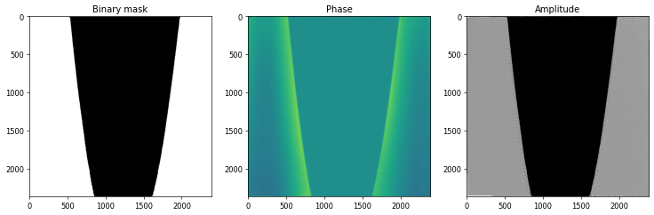
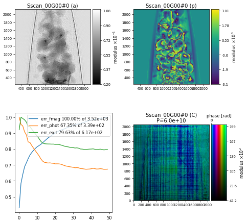

Modifying an Engine#
This tutorial explains how to add new features to an existing engine
We are going to revisit the example on Nearfield Ptychography and use it to test an object regularisation feature that we are going to add to the existing DM engine in PtyPy. The idea with this object regularisation is to define a mask for the region outside of the capillary and then force the reconstructed in those masked regions to a certain value. This might help with low-frequency artefacts or large artificial phase jumps that can occur between the left and right side of the capillary.
Defining a mask#
First, we load the reconstructed object from the previous reconstruction "esrf_id16_AlNi_nearfield_DM_pycuda_0500.ptyr"
import h5py
with h5py.File("../../data/esrf_id16_AlNi_nearfield/esrf_id16_AlNi_nearfield_DM_pycuda_0500.ptyr", "r") as f:
obj = f["content/obj/Sscan_00G00/data"][0]
and use some magic tricks
import numpy as np
import scipy.ndimage as ndi
tmp = np.angle(obj)<0
tmp[:,:450] = 0
tmp[:,-350:] = 0
tmp[1500:,:600] = 0
tmp[1500:,-500:] = 0
tmp2 = ndi.binary_closing(ndi.binary_fill_holes(tmp), iterations=10)
tmp3 = ~ndi.binary_fill_holes(tmp2)
tmp3[2000:,850:1600] = False
mask = np.copy(tmp3)
to define a mask that covers the area left and right of the capillary
import matplotlib.pyplot as plt
fig, axes = plt.subplots(ncols=3, figsize=(15,5), dpi=60)
axes[0].set_title("Binary mask")
axes[0].imshow(mask, cmap="gray")
axes[1].set_title("Phase")
axes[1].imshow(mask*np.angle(obj))
axes[2].set_title("Amplitude")
axes[2].imshow(mask*np.abs(obj), cmap="gray")
plt.show()

import h5py
# Load object from previous reconstruction
with h5py.File("../../data/esrf_id16_AlNi_nearfield/esrf_id16_AlNi_nearfield_DM_pycuda_0500.ptyr", "r") as f:
obj = f["content/obj/Sscan_00G00/data"][0]
# Do some morphology magic to define a mask
import numpy as np
import scipy.ndimage as ndi
tmp = np.angle(obj)<0
tmp[:,:450] = 0
tmp[:,-350:] = 0
tmp[1500:,:600] = 0
tmp[1500:,-500:] = 0
tmp2 = ndi.binary_closing(ndi.binary_fill_holes(tmp), iterations=10)
tmp3 = ~ndi.binary_fill_holes(tmp2)
tmp3[2000:,850:1600] = False
mask = np.copy(tmp3.reshape((1,tmp3.shape[0],tmp3.shape[1])))
# Plotting
import matplotlib.pyplot as plt
fig, axes = plt.subplots(ncols=3, figsize=(15,5), dpi=60)
axes[0].set_title("Binary mask")
axes[0].imshow(mask[0], cmap="gray")
axes[1].set_title("Phase")
axes[1].imshow(mask[0]*np.angle(obj))
axes[2].set_title("Amplitude")
axes[2].imshow(mask[0]*np.abs(obj), cmap="gray")
plt.show()
Adding object regularisation to DM engine#
We can write a new engine class called DM_object_regul as a subclass of projectional.DM in which we include for 4 new engine parameters that we define as part of the docstring of the class, namely object_regul_mask for providing a mask, object_regul_fill for providing the fill value and object_regul_start / object_regul_stop to control the range of iterations during which our new regulariser should be applied
from ptypy.engines import projectional
from ptypy.engines import register
import numpy as np
@register()
class DM_object_regul(projectional.DM):
"""
An extension of DM with the following additional parameters
Defaults:
[object_regul_mask]
default = None
type = ndarray
help = A mask used for regularisation of the object
doc = Numpy.ndarray with same shape as the object that will be casted to a boolean mask
[object_regul_fill]
default = 0.0 + 0.0j
type = float, complex
help = Fill value for regularisation of the object
doc = Providing a complex number, e.g. 1.0 + 0.1j will replace both real and imaginary parts\
Providing a floating number, e.g. 0.5 will replace only the phase
[object_regul_start]
default = None
type = int
help = Number of iterations until object regularisation starts
doc = If None, object regularisation starts at first iteration
[object_regul_stop]
default = None
type = int
help = Number of iterations after which object regularisation stops
doc = If None, object regularisation stops after last iteration
"""
def __init__(self, ptycho_parent, pars=None):
super(DM_object_regul, self).__init__(ptycho_parent, pars)
and then we overload the object_update adding in our regularisation
def object_update(self):
"""
Replace values inside mask with given fill value.
"""
super().object_update()
do_regul = True
if (self.p.object_regul_start is not None):
do_regul &= (self.curiter >= self.p.object_regul_start)
if (self.p.object_regul_stop is not None):
do_regul &= (self.curiter < self.p.object_regul_stop)
if (self.p.object_regul_mask is not None) and do_regul:
for name, s in self.ob.storages.items():
assert s.shape == self.p.object_regul_mask.shape, "Object regulariser mask needs to have same shape as object = {}".format(s.shape)
if isinstance(self.p.object_regul_fill, complex):
s.data[self.p.object_regul_mask.astype(bool)] = self.p.object_regul_fill
elif isinstance(self.p.object_regul_fill, float):
s.data[self.p.object_regul_mask.astype(bool)] = np.abs(s.data[self.p.object_regul_mask.astype(bool)]) * np.exp(1j*self.p.object_regul_fill)
the same code for this modified DM engine can also be found in ptypy.custom.DM_object_regul.
Note
We need to decorate our new class with @register so that it can be picked up as a new engine when imported in the run script.
Adding object regularisation to DM_pycuda engine#
Whenn adding our object regulariser to the GPU-accelerated DM_pycuda engine, we need to also overload the engine_prepare function to
copy the mask from host to device
def engine_prepare(self):
super().engine_prepare()
if self.p.object_regul_mask is not None:
self.object_mask_gpu = gpuarray.to_gpu(self.p.object_regul_mask.astype(np.complex64))
and write some simple kernels
def _setup_kernels(self):
super()._setup_kernels()
from pycuda.elementwise import ElementwiseKernel
self.obj_regul_complex = ElementwiseKernel(
"pycuda::complex<float> *in, pycuda::complex<float> *mask, pycuda::complex<float> fill",
"in[i] = fill*mask[i] + in[i]*(pycuda::complex<float>(1) - mask[i])",
"obj_regulariser_complex")
self.obj_regul_phase = ElementwiseKernel(
"pycuda::complex<float> *in, pycuda::complex<float> *mask, float fill",
"in[i] = pycuda::abs(in[i])*mask[i]*pycuda::exp(fill*pycuda::complex<float>(1)) + in[i]*(pycuda::complex<float>(1) - mask[i])",
"obj_regulariser_phase")
The full code for the DM_pycuda_object_regul engine can be found in ptypy.custom.DM_pycuda_object_regul.
Running the DM engine with object regularisation#
We can import the modified engine from ptypy.custom
from ptypy.custom.DM_pycuda_object_regul import DM_pycuda_object_regul
and modifiy the engine parameters
p.engines = u.Param()
p.engines.DM = u.Param()
p.engines.DM.name = 'DM_pycuda_object_regul'
p.engines.DM.numiter = 500
p.engines.DM.numiter_contiguous = 10
p.engines.DM.probe_support = None
p.engines.DM.clip_object = (.2, 1.1)
p.engines.DM.fourier_power_bound = 0.0
p.engines.DM.probe_update_start = 0
# Additional paramaters
p.engines.DM.object_regul_mask = mask
p.engines.DM.object_regul_fill = 0.0
p.engines.DM.object_regul_start = 0
p.engines.DM.object_regul_stop = 500
which interestingly result in an object amplitude with a better contrast even though only the object phase has been regularised

import ptypy, h5py, os
import ptypy.utils as u
# This will import the HDF5Loader class
ptypy.load_ptyscan_module("hdf5_loader")
# This will import the GPU engines
ptypy.load_gpu_engines("cuda")
# Load custom engine
from ptypy.custom.DM_pycuda_object_regul import DM_pycuda_object_regul
# Root directory of tutorial data
tutorial_data_home = "../../data/"
# Path to HDF5 file with raw data
dataset = "esrf_id16_AlNi_nearfield/S00084_data_bin1_newpos_2048x2048.h5"
# Absolute path to HDF5 file with raw data
path_to_data = os.path.join(tutorial_data_home, dataset)
# Create parameter tree
p = u.Param()
# Set verbose level to interactive
p.verbose_level = "interactive"
# Scan label
p.run = "esrf_id16_AlNi_nearfield"
# Set io settings (no files saved)
p.io = u.Param()
p.io.rfile = "../../data/%(run)s_%(engine)s_%(iterations)04d.ptyr"
p.io.autosave = u.Param(active=False)
p.io.interaction = u.Param(active=False)
# Live-plotting during the reconstruction
p.io.autoplot = u.Param()
p.io.autoplot.active=True
p.io.autoplot.threaded = False
p.io.autoplot.layout = "jupyter"
p.io.autoplot.interval = 10
# Define the scan model
p.scans = u.Param()
p.scans.scan_00 = u.Param()
p.scans.scan_00.name = 'Full'
# Switch propagation to nearfield
p.scans.scan_00.propagation = "nearfield"
# Initial illumination (based on flatfield)
p.scans.scan_00.illumination = u.Param()
p.scans.scan_00.illumination.model = "stxm"
p.scans.scan_00.illumination.aperture = None
# Initial object
p.scans.scan_00.sample = u.Param()
p.scans.scan_00.sample.model = None
p.scans.scan_00.sample.diversity = None
p.scans.scan_00.sample.process = None
# Coherence parameters (modes)
p.scans.scan_00.coherence = u.Param()
p.scans.scan_00.coherence.num_probe_modes = 1
p.scans.scan_00.coherence.num_object_modes = 1
# Data loader
p.scans.scan_00.data = u.Param()
p.scans.scan_00.data.name = 'Hdf5Loader'
p.scans.scan_00.data.orientation = 3
p.scans.scan_00.data.intensities = u.Param()
p.scans.scan_00.data.intensities.file = path_to_data
p.scans.scan_00.data.intensities.key = 'data'
p.scans.scan_00.data.positions = u.Param()
p.scans.scan_00.data.positions.file = path_to_data
p.scans.scan_00.data.positions.slow_key = 'posy'
p.scans.scan_00.data.positions.slow_multiplier = 1
p.scans.scan_00.data.positions.fast_key = 'posx'
p.scans.scan_00.data.positions.fast_multiplier = 1
# Read meta information
p.scans.scan_00.data.auto_center = False
p.scans.scan_00.data.psize = 50.705e-9
p.scans.scan_00.data.distance = 0.019
p.scans.scan_00.data.energy = 17.05
# Reconstruct using GPU-accelerated DM/ML engines
p.engines = u.Param()
p.engines.DM = u.Param()
p.engines.DM.name = 'DM_pycuda_object_regul'
p.engines.DM.numiter = 500
p.engines.DM.numiter_contiguous = 10
p.engines.DM.probe_support = None
p.engines.DM.clip_object = (.2, 1.1)
p.engines.DM.fourier_power_bound = 0.0
p.engines.DM.probe_update_start = 0
# Additional paramaters
p.engines.DM.object_regul_mask = mask
p.engines.DM.object_regul_fill = 0.0
p.engines.DM.object_regul_start = 0
p.engines.DM.object_regul_stop = 500
# Run reconstruction
P = ptypy.core.Ptycho(p,level=5)